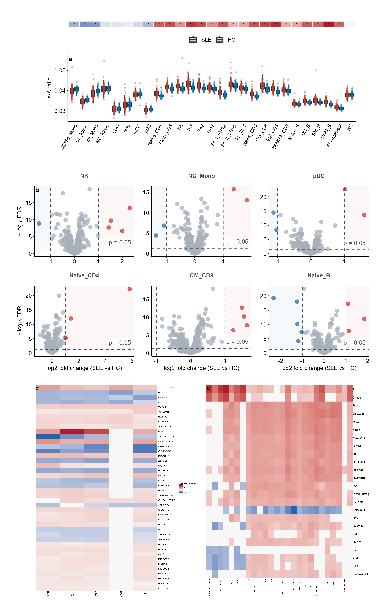
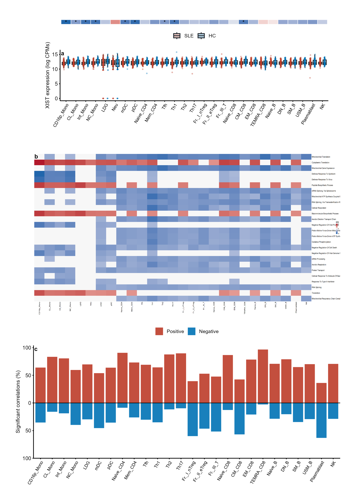
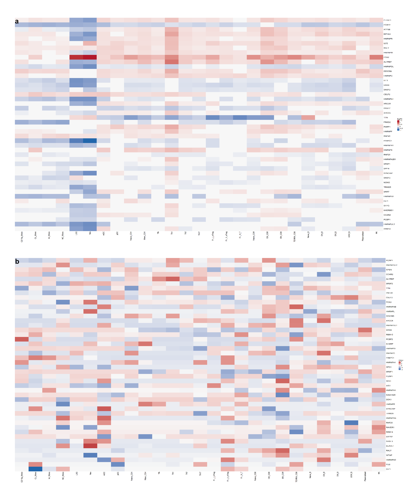

Recreating a Published Figure: SLE X-Chromosome Dysregulation
Lucas VHH Tran
2026-10-17
Source:vignettes/recreate-paper.Rmd
recreate-paper.RmdOverview
This vignette recreates the main figures of a recently published paper in Biology of Sex Differences using cliomicplot plot types and the paper’s own supplementary data:
Soares M, Wemans IS, Caldas P, da Rocha ST, Grosso AR, et al. X-linked transcriptome dysregulation across immune cells in systemic lupus erythematosus. Biology of Sex Differences. 2025;16(1):69. DOI: 10.1186/s13293-025-00750-3.
The paper studies how X-chromosome gene expression is disrupted across 27 immune cell types in female SLE patients (125 SLE vs 66 healthy controls): X/A-ratio distributions, X-linked differential expression, GSEA of immune-related KEGG pathways, DIABLO multi-block classification models, XIST lncRNA dysregulation, and the XIST interactome.
All figures below were generated from the paper’s supplementary
tables, bundled with cliomicplot at
inst/extdata/sle_paper/, and rendered at 300
dpi with Nature-style typography: no in-figure titles, bold
lowercase panel labels, black text on white, thin black axes.
| Dataset (Sup. Table) | Content | Used for |
|---|---|---|
sle_patients (S1) |
Per-sample X/A-ratio and XIST expression, 27 cell types | Fig. 1a, 3a |
sle_xlinked_de (S2) |
DE of X-linked genes, SLE vs HC, per cell type | Fig. 1b, 1c |
sle_gsea_xratio_kegg (S3) |
GSEA KEGG for X/A-ratio-correlated genes | Fig. 1d |
sle_diablo_performance (S4) |
DIABLO model F1/accuracy/markers | Fig. 2a |
sle_diablo_markers (S5) |
Marker genes with X/A correlation & DEG class | Fig. 2b, 2c |
sle_gsea_xist (S8) |
GSEA KEGG + GO BP for XIST-correlated genes | Fig. 3b |
sle_intercellular_cor (S9) |
Intercellular XIST correlations (FDR < 0.05, abs(r) > 0.5) | Fig. 3c |
sle_interactome_de (S11) |
DE of XIST-interactome genes | Fig. 4a |
sle_interactome_loadings (S12) |
Regression loadings of interactome genes | Fig. 4b |
library(cliomicplot)
library(ggplot2)
clipar(stat.test = NULL)
# Resolve bundled data (works for installed package and devtools::load_all)
resolve_sle_data = function(filename) {
pkg_path = system.file("extdata", "sle_paper", filename, package = "cliomicplot")
if (pkg_path != "" && file.exists(pkg_path)) return(pkg_path)
fallback = file.path("..", "inst", "extdata", "sle_paper", filename)
if (file.exists(fallback)) return(fallback)
file.path("inst", "extdata", "sle_paper", filename)
}
load_sle = function(filename) {
e = new.env(parent = emptyenv())
load(resolve_sle_data(filename), envir = e)
as.list(e)
}The full pipeline (data wrangling + all panels + the four composite figures below) is reproducible with one command:
Figure 1 - X-linked transcriptome dysregulation across immune cells
The paper’s Figure 1 shows how X-linked transcription is disturbed in SLE. We reproduce four panels: (a) the distribution of the X/A-ratio across 27 immune cell types (SLE vs HC), (b) volcano plots of X-linked differential expression for representative cells of each immune lineage, (c) a mean-logFC heatmap of consistently dysregulated X-linked genes per lineage, and (d) a Normalized Enrichment Score (NES) heatmap of immune-related KEGG pathways ranked by X/A-ratio correlation.

Recreated Figure 1 (SLE X-linked dysregulation). Panel a: X/A-ratio boxplots. Panel b: volcano small multiples for representative cells. Panel c: mean logFC heatmap of consistently dysregulated X-linked genes by lineage. Panel d: KEGG NES heatmap.
Panel a is a grouped boxplot with jittered points -
one cliplot() call:
pat = load_sle("sle_patients.rda")$sle_patients
pat$Cell_Type = factor(pat$Cell_Type,
levels = c("CD16p_Mono", "CL_Mono", "Int_Mono",
"NC_Mono", "LDG", "Neu", "mDC", "pDC", ...))
pat$Condition = factor(pat$Condition, levels = c("SLE", "HC"))
cliplot(X_Ratio ~ Cell_Type | Condition, data = pat,
type = type_boxplot(add_jitter = TRUE, jitter_size = 0.55,
jitter_alpha = 0.3, width = 0.65),
theme = "nature", palette = "nejm") +
labs(x = NULL, y = "X/A ratio") +
cli_panel_label("a") +
theme(axis.text.x = element_text(angle = 60, hjust = 1, size = 6.5),
legend.position = "top", legend.title = element_blank())Panel c aggregates the per-cell-type DE results into
a gene x lineage matrix of mean logFC for genes that are consistently
(>= 80% of the cell types in a lineage) up- or down-regulated, then
draws a publication heatmap with type_heatmap():
de = load_sle("sle_xlinked_de.rda")$sle_xlinked_de
de = de[de$Classification != "Non-significant", ]
de$Lineage = lineage_map[as.character(de$Cell_Type)] # lineage_map in script
de$Up = de$Classification == "Up-regulated"
consistent_genes = lapply(unique(lineage_map), function(L) {
sub = de[de$Lineage == L, ]
n = table(lineage_map)[[L]]
uc = tapply(sub$Up, sub$Gene, sum)
dc = tapply(sub$Up == FALSE, sub$Gene, sum)
mu = tapply(sub$logFC[sub$Up], sub$Gene[sub$Up], mean)
md = tapply(sub$logFC[!sub$Up], sub$Gene[!sub$Up], mean)
data.frame(Gene = c(names(uc)[uc >= 0.8 * n], names(dc)[dc >= 0.8 * n]),
Lineage = L,
logFC = c(mu[names(uc)[uc >= 0.8 * n]],
md[names(dc)[dc >= 0.8 * n]]),
stringsAsFactors = FALSE)
})
consistent_genes = do.call(rbind, consistent_genes)
mat = reshape2::acast(consistent_genes, Gene ~ Lineage, value.var = "logFC")
mat[is.na(mat)] = 0
cliplot(mat, type = type_heatmap(scale = "none", cluster_rows = FALSE,
cluster_cols = FALSE, show_rownames = TRUE,
show_colnames = TRUE, legend_title = "mean logFC"),
theme = "nature")Figure 2 - Integration of immune transcriptome profiles (DIABLO)
The paper trains chromosome-based DIABLO classifiers to separate SLE from HC samples across immune cell types. We reproduce (a) model performance as an F1-score barplot with the number of selected markers on a secondary axis, (b) the percentage of marker genes whose expression is significantly correlated with the X/A-ratio per chromosome model, and (c) a heatmap of X/A-ratio correlations for the component-1 markers across cell types.

Recreated Figure 2 (DIABLO classification). Panel a: F1 score (bars) with number of selected markers (points, secondary axis). Panel b: percentage of markers correlated with X/A-ratio per model. Panel c: X/A-ratio correlation heatmap for component-1 markers.
The dual-axis F1 panel is a barplot with two added ggplot2 layers:
perf = load_sle("sle_diablo_performance.rda")$sle_diablo_performance
m5 = load_sle("sle_diablo_markers.rda")$sle_diablo_markers
mk = aggregate(Genes ~ Chr_Based_Model, m5, function(x) length(unique(x)))
perf = merge(perf, mk, by = "Chr_Based_Model", all.x = TRUE)
marker_scale = max(perf$Genes) / max(perf$F1)
cliplot(F1 ~ Chr_Based_Model, data = perf,
type = type_barplot(stat = "identity"),
theme = "nature", palette = "nejm") +
labs(x = NULL, y = "F1 score") +
geom_point(data = perf, aes(x = Chr_Based_Model, y = Genes / marker_scale),
shape = 21, fill = "grey25", color = "white", size = 1.7) +
geom_line(data = perf, aes(x = Chr_Based_Model, y = Genes / marker_scale,
group = 1), color = "grey25") +
scale_y_continuous(limits = c(0, 1),
sec.axis = sec_axis(~ . * marker_scale,
name = "Selected markers")) +
cli_panel_label("a")Figure 3 - XIST lncRNA dysregulation across immune cells
XIST, the master regulator of X-chromosome inactivation, is the most consistently dysregulated X-linked gene in SLE. We reproduce (a) the distribution of XIST expression across cell types (SLE vs HC), (b) a NES heatmap of Gene Ontology Biological Process terms enriched among XIST- correlated genes, and (c) the percentage of significant intercellular correlations of XIST with genes of other immune lineages (positive bars up, negative bars down).

Recreated Figure 3 (XIST dysregulation). Panel a: XIST expression boxplots. Panel b: GO Biological Process NES heatmap. Panel c: diverging barplot of significant intercellular XIST correlations (positive/negative percentages per origin cell type).
Panel c summarizes the intercellular correlation table (118,796 correlations, kept at FDR < 0.05 and |r| > 0.5) as a diverging barplot:
icc = load_sle("sle_intercellular_cor.rda")$sle_intercellular_cor
icc = icc[icc$FDR < 0.05 & abs(icc$XIST_Correlation) > 0.5, ]
pos = aggregate(XIST_Correlation > 0 ~ Origin_Cell_Line, icc, mean)
long = rbind(
data.frame(Cell = pos[, 1], Direction = "Positive",
value = 100 * pos[, 2]),
data.frame(Cell = pos[, 1], Direction = "Negative",
value = -100 * (1 - pos[, 2]))
)
cliplot(value ~ Cell | Direction, data = long,
type = type_barplot(stat = "identity"),
theme = "nature", palette = "nejm") +
geom_hline(yintercept = 0, linewidth = 0.4) +
scale_y_continuous(labels = function(x) abs(x), limits = c(-100, 100)) +
labs(x = NULL, y = "Significant correlations (%)") +
cli_panel_label("c")Figure 4 - XIST-interactome dysregulation across immune cells
Finally, the paper interrogates the interactome of XIST. We reproduce (a) a logFC heatmap of XIST-interactome genes across cell types (cells with FDR >= 0.05 are left white), and (b) a row-scaled heatmap of the XIST-interactome regression loadings, i.e. the contribution of each interactome gene to the cell-type-specific X/A-ratio models.

Recreated Figure 4 (XIST interactome). Panel a: logFC heatmap of XIST-interactome genes (white = not significant). Panel b: row-scaled heatmap of XIST-interactome regression loadings.
ide = load_sle("sle_interactome_de.rda")$sle_interactome_de
ide$Cell_Type = factor(ide$Cell_Type, levels = lineage_order)
ide$logFC_plot = ifelse(ide$FDR < 0.05, ide$logFC, 0) # white = not significant
mat = reshape2::acast(ide, Gene ~ Cell_Type, value.var = "logFC_plot")
mat = mat[order(apply(mat != 0, 1, sum), apply(abs(mat), 1, max),
decreasing = TRUE), , drop = FALSE][1:46, , drop = FALSE]
cliplot(mat, type = type_heatmap(scale = "none", cluster_rows = FALSE,
cluster_cols = FALSE, show_rownames = TRUE,
show_colnames = TRUE, legend_title = "logFC"),
theme = "nature")Notes
- All four composites were assembled with
patchwork(+,/,|,plot_layout()); the heatmaps usetype_heatmap(), which renders throughComplexHeatmapwhen installed and falls back to a ggplot2 tile plot otherwise. - The heatmap legend title is configurable via the new
legend_titleargument oftype_heatmap()(e.g."mean logFC","NES","logFC"). - The bundled tables are the paper’s supplementary tables S1-S13,
converted from the publisher’s XLSX files to compressed
.rdafiles; seeinst/extdata/build_sle_figures.Rfor the full reproducible pipeline.